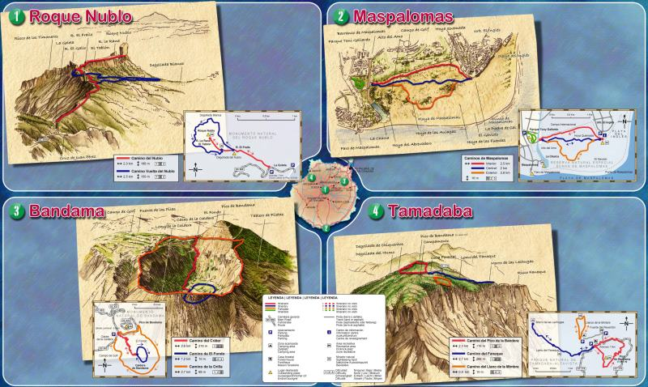

Rutas en Gran Canaria
Gran Routes, ha contratado los servicios de una de las personas mas apasionada de la isla de Gran Canaria y del senderismo, Manolo Cardona, el cual nos ha inventariado algunos de los recorridos mas emblemáticos de Gran Canaria, los cuales les dejamos que elijan recorrido y puedan descargarse la ruta recomendada.
La isla de Gran Canaria, situada en el Océano Atlántico a 115 kilómetros de la costa de África, es parte del Archipiélago Canario. Su superficie casi redonda ofrece a los visitantes 1.532 kilómetros cuadrados de variedad natural y paisajística.
De origen volcánico, el paisaje grancanario ha sido modelado a lo largo de los años por la fuerza de la naturaleza y la acción del hombre, dando lugar a una isla con gran diversidad paisajística y con poca semejanza entre los distintos puntos de su orografía. Debido a ello, nos encontramos con variados ecosistemas y con un relieve abrupto que origina laderas, profundos barrancos y altos acantilados. Es por la variedad de sus paisajes, por lo que Gran Canaria es conocida como "el continente en miniatura".
Se pueden encontrar enormes diferencias entre el Norte y Centro de la Isla, donde encontramos zonas verdes y cargadas de vegetación autóctona, y el Sur, que cuenta con paisajes más secos y áridos, aunque no por ello con menos encanto. La isla combina lugares tan diferentes como las largas playas de la zona sur, donde el buen clima y el sol se mantienen prácticamente todo el año, y los bosques de las zonas más altas, donde la temperatura es mucho más fresca debido a la altitud y a los vientos alisios.
Gran Canaria ofrece condiciones inmejorables para la práctica del turismo rural. El clima primaveral, aliciente fundamental del Archipiélago para cualquier tipo de turismo, lo es también para el rural. Permite la práctica de infinidad de deportes al aire libre, entre los que destaca el senderismo. Existen en la isla más de 300 kilómetros de senderos. Hasta finales del siglo XIX no se construyeron las primeras carreteras en Gran Canaria. Con anterioridad existían una serie de caminos, senderos y veredas que comunicaban los puntos más importantes de la isla. Esta red de caminos, conocidos como "caminos reales", ha sido recuperada y preparada para que el caminante pueda disfrutar de la belleza natural de Gran Canaria.